<style>
  /* ============================================================
     ATLAS / TRAVEL — glossy magazine spread for the Victor's weekend
     Cream paper, oxblood ink, burnished gold rule. Fraunces display.
     ============================================================ */
  @import url('https://fonts.googleapis.com/css2?family=Fraunces:ital,opsz,wght@0,9..144,300;0,9..144,400;0,9..144,500;0,9..144,700;0,9..144,900;1,9..144,300;1,9..144,400;1,9..144,500&family=Inter:wght@300;400;500;600;700&display=swap');

  :root {
    --paper:   #f5ecdc;
    --paper-2: #efe4cf;
    --ink:     #1c1410;
    --ink-2:   #3b2a20;
    --oxblood: #6b1f1a;
    --rust:    #a04a23;
    --gold:    #a07a2e;
    --gold-2:  #c79a43;
    --rule:    #2c1e16;
    --muted:   #6b5740;
    --serif:   "Fraunces", "Iowan Old Style", Georgia, serif;
    --sans:    "Inter", -apple-system, BlinkMacSystemFont, "Segoe UI", sans-serif;
  }

  .mag {
    margin: 0;
    padding: 0;
    background:
      radial-gradient(ellipse at 18% 8%,  rgba(160, 122, 46, 0.07) 0%, transparent 55%),
      radial-gradient(ellipse at 82% 92%, rgba(107, 31, 26, 0.06) 0%, transparent 55%),
      var(--paper);
    color: var(--ink);
    font-family: var(--sans);
    font-size: 15px;
    line-height: 1.6;
    overflow-x: hidden;
  }
  .mag * { box-sizing: border-box; }
  .mag a { color: inherit; text-decoration: none; border-bottom: 1px solid rgba(107,31,26,0.35); }
  .mag a:hover { color: var(--oxblood); border-bottom-color: var(--oxblood); }
  .mag sup a { border: 0; color: var(--oxblood); font-weight: 500; }
  .mag sup { font-size: 0.65em; }

  .wrap { max-width: 1280px; margin: 0 auto; padding: 0 36px; }

  /* ------- MASTHEAD ------- */
  .masthead { border-bottom: 1px solid var(--rule); padding: 22px 0 14px; }
  .masthead-row {
    display: flex; align-items: baseline; justify-content: space-between;
    gap: 24px; flex-wrap: wrap;
  }
  .masthead .brand {
    font-family: var(--serif); font-weight: 900; font-size: 38px; letter-spacing: 0.16em;
    color: var(--ink);
  }
  .masthead .brand span { color: var(--oxblood); }
  .masthead .meta {
    font-family: var(--sans); font-size: 11px; letter-spacing: 0.22em; text-transform: uppercase;
    color: var(--muted); display: flex; gap: 22px; flex-wrap: wrap;
  }
  .masthead .meta b { color: var(--ink); font-weight: 700; }
  .masthead-sub {
    display: flex; gap: 22px; flex-wrap: wrap; margin-top: 8px;
    font-family: var(--sans); font-size: 10.5px; letter-spacing: 0.28em; text-transform: uppercase;
    color: var(--gold);
  }

  /* ------- COVER ------- */
  .cover { padding: 56px 0 72px; }
  .cover-grid {
    display: grid; grid-template-columns: 1.05fr 1fr; gap: 56px; align-items: end;
  }
  .cover-kicker {
    font-family: var(--sans); font-size: 11px; letter-spacing: 0.36em; text-transform: uppercase;
    color: var(--oxblood); font-weight: 600; margin-bottom: 18px;
    display: flex; align-items: center; gap: 14px;
  }
  .cover-kicker::after {
    content: ""; height: 1px; background: var(--oxblood); flex: 1; opacity: 0.55;
  }
  .cover h1 {
    font-family: var(--serif); font-weight: 400; font-style: italic;
    font-size: clamp(48px, 6.4vw, 96px);
    line-height: 0.96; letter-spacing: -0.012em; margin: 0 0 26px;
    color: var(--ink);
  }
  .cover h1 em { font-style: normal; color: var(--oxblood); }
  .cover .deck {
    font-family: var(--serif); font-weight: 300; font-style: italic;
    font-size: 21px; line-height: 1.45; color: var(--ink-2); max-width: 36em;
    border-left: 3px solid var(--gold); padding-left: 18px;
  }
  .cover-tags {
    display: flex; gap: 8px; flex-wrap: wrap; margin-top: 28px;
  }
  .tag {
    font-family: var(--sans); font-size: 10px; letter-spacing: 0.16em; text-transform: uppercase;
    padding: 5px 11px; border: 1px solid var(--rule); color: var(--ink-2); background: rgba(255,255,255,0.35);
  }
  .cover-image {
    position: relative; aspect-ratio: 4/5; overflow: hidden; background: var(--ink);
    box-shadow: 0 30px 60px -25px rgba(28,20,16,0.45);
  }
  .cover-image img { width: 100%; height: 100%; object-fit: cover; display: block; filter: contrast(1.04) saturate(1.05); }
  .cover-image .caption {
    position: absolute; left: 0; right: 0; bottom: 0;
    background: linear-gradient(to top, rgba(28,20,16,0.85), transparent 80%);
    color: #f5ecdc; padding: 18px 22px 16px;
    font-family: var(--sans); font-size: 11px; letter-spacing: 0.18em; text-transform: uppercase;
  }
  .cover-image .caption b { color: var(--gold-2); font-weight: 700; }

  /* byline strip */
  .byline {
    border-top: 1px solid var(--rule); border-bottom: 1px solid var(--rule);
    padding: 14px 0; display: flex; justify-content: space-between; align-items: center;
    gap: 24px; flex-wrap: wrap;
    font-family: var(--sans); font-size: 11px; letter-spacing: 0.22em; text-transform: uppercase; color: var(--muted);
  }
  .byline .stars { font-family: var(--serif); font-size: 26px; color: var(--gold); letter-spacing: 0.06em; }
  .byline-item b { color: var(--ink); font-weight: 700; }

  /* ------- LEAD / DROP CAP NARRATIVE ------- */
  .lead { padding: 64px 0 56px; }
  .section-rule {
    font-family: var(--sans); font-size: 11px; letter-spacing: 0.36em; text-transform: uppercase;
    color: var(--oxblood); font-weight: 600; display: flex; align-items: center; gap: 14px;
    margin-bottom: 22px;
  }
  .section-rule::before, .section-rule::after {
    content: ""; height: 1px; background: var(--oxblood); flex: 1; opacity: 0.5;
  }
  .section-rule.left::before { display: none; }
  .section-rule.left::after { display: none; }
  .section-rule.left { justify-content: flex-start; }
  .section-rule.left::after { content: ""; display: block; height: 1px; background: var(--oxblood); flex: 1; opacity: 0.5; }

  .lead h2 {
    font-family: var(--serif); font-weight: 500; font-size: clamp(34px, 4.2vw, 56px);
    line-height: 1.05; letter-spacing: -0.012em; margin: 0 0 36px;
    color: var(--ink); max-width: 22ch;
  }
  .columns {
    column-count: 3; column-gap: 36px;
    font-family: var(--serif); font-weight: 400; font-size: 17.5px;
    line-height: 1.65; color: var(--ink); text-align: justify; hyphens: auto;
  }
  .columns p { margin: 0 0 1em; break-inside: avoid; }
  .dropcap::first-letter {
    font-family: var(--serif); font-weight: 900;
    font-size: 5.6em; line-height: 0.84;
    float: left; padding: 4px 14px 0 0; margin: 6px 0 0;
    color: var(--oxblood);
  }

  /* ------- HERO FEATURE ------- */
  .hero { padding: 72px 0; position: relative; }
  .hero::before {
    content: "ONE TABLE"; position: absolute; left: -8px; top: 40px;
    font-family: var(--serif); font-weight: 900; font-size: 240px;
    color: rgba(107, 31, 26, 0.05); letter-spacing: -0.04em; line-height: 0.85;
    pointer-events: none; white-space: nowrap;
  }
  .hero-grid {
    display: grid; grid-template-columns: 1fr 1.1fr; gap: 52px; align-items: center;
    position: relative;
  }
  .hero-photo {
    aspect-ratio: 4/5; overflow: hidden; background: var(--ink);
    box-shadow: 0 30px 60px -25px rgba(28,20,16,0.45);
  }
  .hero-photo img { width: 100%; height: 100%; object-fit: cover; display: block; }
  .hero-copy .deck-label {
    font-family: var(--sans); font-size: 11px; letter-spacing: 0.36em; text-transform: uppercase;
    color: var(--gold); font-weight: 700; margin-bottom: 14px;
  }
  .hero-copy h3 {
    font-family: var(--serif); font-weight: 500; font-style: italic;
    font-size: clamp(38px, 4.6vw, 64px);
    line-height: 0.98; margin: 0 0 18px; letter-spacing: -0.012em;
  }
  .hero-copy h3 em { font-style: normal; color: var(--oxblood); }
  .hero-stars {
    font-family: var(--serif); font-size: 30px; color: var(--gold); letter-spacing: 0.12em;
    margin: 4px 0 22px;
  }
  .hero-copy p {
    font-family: var(--serif); font-size: 18px; line-height: 1.62; color: var(--ink-2);
    margin: 0 0 1em; max-width: 36em;
  }
  .pullquote {
    font-family: var(--serif); font-style: italic; font-weight: 400;
    font-size: 28px; line-height: 1.35; color: var(--oxblood);
    border-left: 4px solid var(--gold); padding: 4px 0 4px 22px; margin: 28px 0;
    max-width: 26em;
  }
  .pullquote cite { display: block; font-style: normal; font-family: var(--sans);
    font-size: 11px; letter-spacing: 0.22em; text-transform: uppercase; color: var(--muted); margin-top: 10px; }

  /* ------- THE BOOKING SIDEBAR ------- */
  .facts {
    background: var(--ink); color: var(--paper); padding: 36px 32px;
    margin-top: 32px; border-top: 4px solid var(--gold);
  }
  .facts h4 {
    font-family: var(--sans); font-size: 11px; letter-spacing: 0.32em; text-transform: uppercase;
    color: var(--gold-2); margin: 0 0 18px; font-weight: 700;
  }
  .facts-grid {
    display: grid; grid-template-columns: repeat(2, 1fr); gap: 18px 28px;
  }
  .fact { font-family: var(--sans); }
  .fact-label { font-size: 10px; letter-spacing: 0.3em; text-transform: uppercase; color: var(--gold-2); margin-bottom: 6px; }
  .fact-value { font-family: var(--serif); font-size: 19px; line-height: 1.35; color: var(--paper); }
  .fact-value small { display: block; font-family: var(--sans); font-size: 12px; color: rgba(245,236,220,0.7); letter-spacing: 0; margin-top: 4px; text-transform: none; }

  /* ------- LODGING SPREAD ------- */
  .lodge { padding: 72px 0; background:
      linear-gradient(180deg, transparent 0, rgba(160,74,35,0.04) 35%, transparent 100%); }
  .lodge h2 {
    font-family: var(--serif); font-weight: 500; font-size: clamp(34px, 4.2vw, 56px);
    line-height: 1.05; margin: 0 0 12px; letter-spacing: -0.012em;
  }
  .lodge h2 em { font-style: italic; color: var(--oxblood); }
  .lodge .standfirst {
    font-family: var(--serif); font-style: italic; font-size: 19px; color: var(--ink-2);
    max-width: 50em; margin-bottom: 40px;
  }
  .lodge-grid {
    display: grid; grid-template-columns: 1.5fr 1fr 1fr; gap: 28px;
  }
  .lodge-card {
    background: var(--paper-2); border: 1px solid rgba(44,30,22,0.12);
    display: flex; flex-direction: column;
  }
  .lodge-card.feature { grid-row: span 2; }
  .lodge-card.feature .lodge-photo { aspect-ratio: 4/5; }
  .lodge-photo {
    aspect-ratio: 3/2; overflow: hidden; position: relative; background: var(--ink);
  }
  .lodge-photo img { width: 100%; height: 100%; object-fit: cover; display: block; }
  .lodge-photo .rank {
    position: absolute; top: 0; left: 0; background: var(--oxblood); color: var(--paper);
    width: 44px; height: 44px; display: flex; align-items: center; justify-content: center;
    font-family: var(--serif); font-size: 22px; font-weight: 700; font-style: italic;
  }
  .lodge-body { padding: 22px 24px 26px; flex: 1; display: flex; flex-direction: column; }
  .lodge-kicker {
    font-family: var(--sans); font-size: 10px; letter-spacing: 0.28em; text-transform: uppercase;
    color: var(--oxblood); font-weight: 600; margin-bottom: 8px;
  }
  .lodge-card h3 {
    font-family: var(--serif); font-weight: 500; font-size: 26px;
    line-height: 1.1; margin: 0 0 10px;
  }
  .lodge-card.feature h3 { font-size: 34px; }
  .lodge-card p {
    font-family: var(--serif); font-size: 15px; line-height: 1.55; color: var(--ink-2);
    margin: 0 0 12px;
  }
  .lodge-meta {
    margin-top: auto; padding-top: 14px; border-top: 1px solid rgba(44,30,22,0.18);
    display: flex; flex-wrap: wrap; gap: 8px 14px;
    font-family: var(--sans); font-size: 11px; letter-spacing: 0.12em; color: var(--muted);
    text-transform: uppercase;
  }
  .lodge-meta b { color: var(--ink); font-weight: 600; }

  .caveat {
    background: rgba(107,31,26,0.06); border-left: 3px solid var(--oxblood);
    padding: 12px 16px; font-family: var(--serif); font-style: italic; font-size: 14px;
    color: var(--ink-2); margin-top: 12px;
  }

  /* ------- RADIUS / ACTIVITIES ------- */
  .radius { padding: 80px 0 60px; }
  .radius-head {
    display: grid; grid-template-columns: 1.4fr 1fr; gap: 56px; align-items: end;
    margin-bottom: 44px;
  }
  .radius h2 {
    font-family: var(--serif); font-weight: 500; font-size: clamp(36px, 4.6vw, 64px);
    line-height: 1.0; margin: 0; letter-spacing: -0.012em;
  }
  .radius h2 em { font-style: italic; color: var(--oxblood); }
  .radius-intro {
    font-family: var(--serif); font-style: italic; font-size: 18px; line-height: 1.55;
    color: var(--ink-2);
  }
  .radius-grid {
    display: grid; grid-template-columns: repeat(6, 1fr); grid-auto-rows: minmax(220px, auto);
    gap: 22px;
  }
  .activity {
    position: relative; overflow: hidden; color: var(--paper); background: var(--ink);
    display: flex; flex-direction: column; justify-content: flex-end;
    padding: 22px 22px 22px; min-height: 220px;
  }
  .activity > img {
    position: absolute; inset: 0; width: 100%; height: 100%; object-fit: cover;
    z-index: 0; filter: contrast(1.06) saturate(1.05);
  }
  .activity::after {
    content: ""; position: absolute; inset: 0;
    background: linear-gradient(180deg, rgba(28,20,16,0.0) 0%, rgba(28,20,16,0.15) 35%, rgba(28,20,16,0.88) 100%);
    z-index: 1;
  }
  .activity > * { position: relative; z-index: 2; }
  .activity .km {
    font-family: var(--sans); font-size: 10px; letter-spacing: 0.3em; text-transform: uppercase;
    color: var(--gold-2); font-weight: 700; margin-bottom: 6px;
  }
  .activity h4 {
    font-family: var(--serif); font-weight: 500; font-style: italic;
    font-size: 24px; line-height: 1.05; margin: 0 0 8px; color: var(--paper);
  }
  .activity p {
    font-family: var(--sans); font-size: 12.5px; line-height: 1.5; margin: 0;
    color: rgba(245,236,220,0.88);
  }
  .activity p a { color: rgba(245,236,220,0.88); border-bottom-color: rgba(245,236,220,0.4); }
  .activity p sup a { color: var(--gold-2); }
  .activity.dim { background: linear-gradient(135deg, #2c1e16, #6b1f1a); }
  .activity.gradient-2 { background: linear-gradient(135deg, #3b2a20, #a04a23); }
  .activity.gradient-3 { background: linear-gradient(135deg, #1c1410, #6b5740); }

  /* span helpers */
  .span-2 { grid-column: span 2; }
  .span-3 { grid-column: span 3; }
  .span-4 { grid-column: span 4; }
  .row-2 { grid-row: span 2; }

  /* ------- ITINERARY BAND ------- */
  .plan { padding: 64px 0 56px; background: var(--ink); color: var(--paper); }
  .plan-grid {
    display: grid; grid-template-columns: 1fr 2fr; gap: 56px;
  }
  .plan h2 {
    font-family: var(--serif); font-weight: 500; font-style: italic;
    font-size: clamp(36px, 4.4vw, 56px); line-height: 1.0; margin: 0 0 12px;
    color: var(--paper);
  }
  .plan h2 em { font-style: normal; color: var(--gold-2); }
  .plan .standfirst {
    font-family: var(--serif); font-style: italic; font-size: 17px;
    color: rgba(245,236,220,0.7); margin: 0;
  }
  .plan-steps {
    list-style: none; padding: 0; margin: 0;
    display: flex; flex-direction: column; gap: 22px;
  }
  .plan-step {
    display: grid; grid-template-columns: 88px 1fr; gap: 22px; align-items: baseline;
    padding-bottom: 22px; border-bottom: 1px solid rgba(245,236,220,0.12);
  }
  .plan-step:last-child { border-bottom: 0; padding-bottom: 0; }
  .plan-time {
    font-family: var(--serif); font-size: 22px; color: var(--gold-2); font-weight: 500;
    letter-spacing: 0.04em; font-style: italic;
  }
  .plan-time small { display: block; font-family: var(--sans); font-size: 10px; letter-spacing: 0.3em;
    text-transform: uppercase; color: rgba(245,236,220,0.55); margin-top: 4px; font-style: normal; }
  .plan-text { font-family: var(--serif); font-size: 17px; line-height: 1.55; color: var(--paper); }
  .plan-text b { color: var(--gold-2); font-weight: 600; }
  .plan-text a { color: var(--paper); border-bottom-color: rgba(245,236,220,0.4); }

  /* ------- DEPARTURE / GAPS ------- */
  .departure { padding: 72px 0 48px; }
  .depart-grid {
    display: grid; grid-template-columns: 1.2fr 1fr; gap: 56px;
  }
  .depart-grid h2 {
    font-family: var(--serif); font-weight: 500; font-size: clamp(32px, 4vw, 48px);
    line-height: 1.05; margin: 0 0 18px;
  }
  .depart-grid h2 em { font-style: italic; color: var(--oxblood); }
  .depart-grid p {
    font-family: var(--serif); font-size: 18px; line-height: 1.62; color: var(--ink-2);
    margin: 0 0 1em;
  }
  .gap-box {
    background: var(--paper-2); border: 1px solid rgba(44,30,22,0.16);
    padding: 28px 28px 26px; border-top: 4px solid var(--oxblood);
  }
  .gap-box h4 {
    font-family: var(--sans); font-size: 11px; letter-spacing: 0.32em; text-transform: uppercase;
    color: var(--oxblood); margin: 0 0 14px; font-weight: 700;
  }
  .gap-box p { font-family: var(--serif); font-size: 16px; color: var(--ink-2); margin: 0 0 10px; line-height: 1.55; }
  .gap-box .label-row {
    font-family: var(--sans); font-size: 10.5px; letter-spacing: 0.22em; text-transform: uppercase;
    color: var(--muted); margin-top: 14px; padding-top: 14px; border-top: 1px solid rgba(44,30,22,0.16);
    display: flex; gap: 18px; flex-wrap: wrap;
  }

  /* ------- COLOPHON / SOURCES ------- */
  .colophon {
    background: var(--paper-2); border-top: 1px solid var(--rule);
    padding: 56px 0 64px;
  }
  .col-grid {
    display: grid; grid-template-columns: 1fr 1fr 1fr; gap: 36px;
  }
  .col-block h4 {
    font-family: var(--sans); font-size: 10px; letter-spacing: 0.36em; text-transform: uppercase;
    color: var(--oxblood); font-weight: 700; margin: 0 0 14px;
    padding-bottom: 10px; border-bottom: 1px solid rgba(44,30,22,0.18);
  }
  .col-block ol {
    list-style: none; padding: 0; margin: 0;
    font-family: var(--serif); font-size: 14px; line-height: 1.55; color: var(--ink-2);
  }
  .col-block ol li {
    padding: 7px 0; border-bottom: 1px dotted rgba(44,30,22,0.15);
    display: grid; grid-template-columns: 30px 1fr; gap: 8px; align-items: baseline;
  }
  .col-block ol li:last-child { border-bottom: 0; }
  .col-block .n {
    font-family: var(--serif); font-weight: 700; font-style: italic; color: var(--oxblood);
    font-size: 15px;
  }
  .sibling-card {
    padding: 14px 16px; border: 1px solid rgba(44,30,22,0.18); margin-bottom: 14px;
    background: var(--paper);
  }
  .sibling-card .depth-pill {
    display: inline-block; font-family: var(--sans); font-size: 9.5px; letter-spacing: 0.22em;
    text-transform: uppercase; color: var(--paper); background: var(--oxblood);
    padding: 3px 9px; margin-bottom: 8px; font-weight: 600;
  }
  .sibling-card .depth-pill.survey { background: var(--gold); color: var(--ink); }
  .sibling-card h5 {
    font-family: var(--serif); font-size: 17px; font-weight: 500; line-height: 1.2;
    margin: 0 0 6px;
  }
  .sibling-card p {
    font-family: var(--serif); font-size: 13.5px; color: var(--ink-2); margin: 0; line-height: 1.45;
  }

  /* footer plate */
  .plate {
    border-top: 1px solid var(--rule); padding: 22px 0 0; margin-top: 36px;
    display: flex; justify-content: space-between; align-items: center; flex-wrap: wrap; gap: 12px;
    font-family: var(--sans); font-size: 10.5px; letter-spacing: 0.28em; text-transform: uppercase;
    color: var(--muted);
  }
  .plate b { color: var(--ink); font-weight: 700; }

  /* ------- RESPONSIVE ------- */
  @media (max-width: 980px) {
    .columns { column-count: 2; }
    .cover-grid, .hero-grid, .radius-head, .plan-grid, .depart-grid, .col-grid { grid-template-columns: 1fr !important; gap: 32px; }
    .hero::before { display: none; }
    .lodge-grid { grid-template-columns: 1fr 1fr; }
    .lodge-card.feature { grid-row: auto; }
    .radius-grid { grid-template-columns: repeat(2, 1fr); }
    .span-2, .span-3, .span-4 { grid-column: span 2; }
  }
  @media (max-width: 640px) {
    .wrap { padding: 0 20px; }
    .columns { column-count: 1; }
    .lodge-grid { grid-template-columns: 1fr; }
    .radius-grid { grid-template-columns: 1fr; }
    .span-2, .span-3, .span-4 { grid-column: auto; }
    .plan-step { grid-template-columns: 1fr; gap: 8px; }
    .facts-grid { grid-template-columns: 1fr; }
  }
</style>

<article class="mag">

  <!-- =================== MASTHEAD =================== -->
  <header class="masthead">
    <div class="wrap">
      <div class="masthead-row">
        <div class="brand">ATLAS · <span>TRAVEL</span></div>
        <div class="meta">
          <span>Issue 27 · <b>May 2026</b></span>
          <span>Feature</span>
          <span>23 min</span>
          <span>117 citations</span>
        </div>
      </div>
      <div class="masthead-sub">
        <span>Saarland · Saar-Mosel · Luxembourg</span>
        <span>Three Stars · One Weekend</span>
      </div>
    </div>
  </header>

  <!-- =================== COVER =================== -->
  <section class="cover">
    <div class="wrap">
      <div class="cover-grid">
        <div class="cover-copy">
          <div class="cover-kicker">A Weekend Feature · Perl-Nennig</div>
          <h1>A Saturday <em>at Victor's</em>, and the slow weekend around it.</h1>
          <div class="deck">
            How to wrap a weekend around <a href="https://www.victors-fine-dining.de/en/restaurant">Christian Bau's three-star table</a> in Perl-Nennig — where to sleep so you can walk home, what to do in the 30 km radius, and the dinner-booking facts that anchor every other choice.<sup><a href="https://www.victors-fine-dining.de/en/restaurant">[1]</a></sup>
          </div>
          <div class="cover-tags">
            <span class="tag">Weekend Trip</span>
            <span class="tag">Michelin</span>
            <span class="tag">Saar-Mosel</span>
            <span class="tag">Luxembourg</span>
            <span class="tag">Fine Dining</span>
          </div>
        </div>
        <figure class="cover-image">
          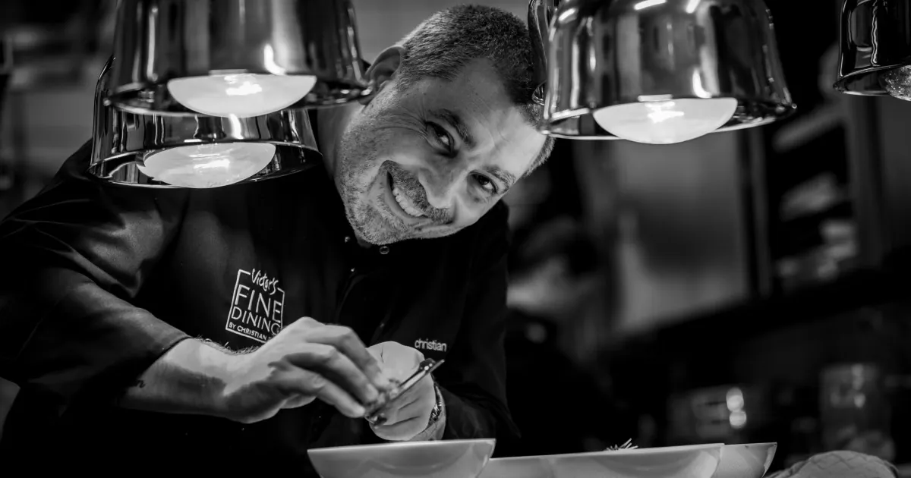
          <figcaption class="caption">Perl-Nennig, Saarland · <b>★★★</b> · Christian Bau</figcaption>
        </figure>
      </div>
    </div>
  </section>

  <!-- =================== BYLINE =================== -->
  <section>
    <div class="wrap">
      <div class="byline">
        <div class="byline-item">Filed from <b>Schloßstraße 27–29, 66706 Perl-Nennig</b></div>
        <div class="stars">★ ★ ★</div>
        <div class="byline-item">Three Michelin stars · <b>since 2005</b></div>
      </div>
    </div>
  </section>

  <!-- =================== LEAD =================== -->
  <section class="lead">
    <div class="wrap">
      <div class="section-rule left">The Booking Anchor</div>
      <h2>One fact ties every other decision together.</h2>
      <div class="columns dropcap">
        <p>One reservation rules the weekend. <a href="https://www.victors-fine-dining.de/en/restaurant">Victor's Fine Dining by Christian Bau</a> serves dinner Thursday through Sunday and lunch Saturday and Sunday, with last orders at 20:00 and creative pauses 18 May–7 June and 21 September–4 October 2026.<sup><a href="https://www.victors-fine-dining.de/en/restaurant">[1]</a></sup> Pick the date <em>before</em> the lodging — if it lands in a pause or a Monday, none of the rest of this matters.</p>
        <p>The room sits inside <a href="https://www.victors.de/en/hotels/victor-s-residenz-hotel-schloss-berg/rooms1">Victor's Residenz-Hotel Schloss Berg</a> at Schloßstraße 27–29, Perl-Nennig.<sup><a href="https://www.victors-fine-dining.de/en/contact">[2]</a></sup> The dining FAQ states plainly that the restaurant will book your hotel room with your dinner reservation,<sup><a href="https://www.victors-fine-dining.de/en/faq">[3]</a></sup> so the simplest weekend is one phone call.</p>
        <p>The kitchen has held three Michelin stars since 2005<sup><a href="https://guide.michelin.com/us/en/saarland/perl/restaurant/victor-s-fine-dining-by-christian-bau">[4]</a></sup> — that is the gravitational centre of this trip. Everything else — the lodging, the daylight hours, the half-day excursions, the route home — is a planet in its orbit. We treat it that way.</p>
        <p>The two-night question is the only ambiguity. With <a href="https://www.victors-fine-dining.de/en/restaurant">Saturday lunch also available</a>,<sup><a href="https://www.victors-fine-dining.de/en/restaurant">[1]</a></sup> a longer weekend with both Saturday services stacked is in theory possible — though whether the kitchen takes a same-day, back-to-back booking is the sharpest open question of this run. Either way, the rest of the itinerary holds.</p>
      </div>
    </div>
  </section>

  <!-- =================== HERO FEATURE =================== -->
  <section class="hero">
    <div class="wrap">
      <div class="hero-grid">
        <figure class="hero-photo">
          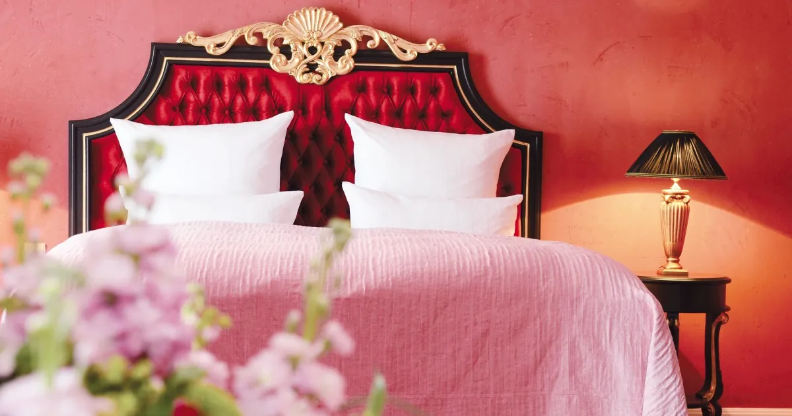
        </figure>
        <div class="hero-copy">
          <div class="deck-label">The Star Table</div>
          <h3>The kitchen <em>is</em> the destination.</h3>
          <div class="hero-stars">★ ★ ★</div>
          <p>The restaurant occupies the castle building of the Schloss Berg complex; the rooms sit a few metres away in the Mediterranean villa.<sup><a href="https://www.victors.de/en/hotels/victor-s-residenz-hotel-schloss-berg/restaurants-bars">[6]</a></sup> The whole point — and the small mercy after a tasting menu — is that you don't need to leave the property to sleep it off.</p>
          <p>If three stars on Saturday is not enough Christian Bau, the on-property <a href="https://www.victors.de/en/hotels/victor-s-residenz-hotel-schloss-berg/bacchus">Bacchus</a> serves an upscale Italian / Mediterranean kitchen on the same campus<sup><a href="https://www.victors.de/en/hotels/victor-s-residenz-hotel-schloss-berg/bacchus">[7]</a></sup> — useful if Fine Dining is closed for a creative pause.</p>
          <div class="pullquote">
            "We will be pleased to book rooms for you."
            <cite>— Victor's Fine Dining FAQ</cite>
          </div>

          <div class="facts">
            <h4>The Booking Facts</h4>
            <div class="facts-grid">
              <div class="fact">
                <div class="fact-label">Dinner</div>
                <div class="fact-value">Thu–Sun<small>last orders 20:00</small></div>
              </div>
              <div class="fact">
                <div class="fact-label">Lunch</div>
                <div class="fact-value">Sat–Sun<small>two services possible same Saturday</small></div>
              </div>
              <div class="fact">
                <div class="fact-label">Closed</div>
                <div class="fact-value">Mon–Wed<small>creative pauses 18 May–7 Jun · 21 Sep–4 Oct 2026</small></div>
              </div>
              <div class="fact">
                <div class="fact-label">Phone</div>
                <div class="fact-value">+49 6866 79-118<small>Schloßstraße 27–29, 66706 Perl-Nennig</small></div>
              </div>
            </div>
          </div>
        </div>
      </div>
    </div>
  </section>

  <!-- =================== LODGING =================== -->
  <section class="lodge">
    <div class="wrap">
      <div class="section-rule left">Where to Lay Your Head</div>
      <h2>One walk home, three <em>alternatives</em>.</h2>
      <p class="standfirst">The two lodging surveys point at the same dominant choice from opposite directions — and at the same tension. Here are four ways to settle the question.</p>

      <div class="lodge-grid">

        <!-- Feature card: Schloss Berg -->
        <article class="lodge-card feature">
          <div class="lodge-photo">
            <div class="rank">1</div>
            
          </div>
          <div class="lodge-body">
            <div class="lodge-kicker">The Obvious Answer · zero walk</div>
            <h3><a href="https://www.victors.de/en/hotels/victor-s-residenz-hotel-schloss-berg/rooms1">Victor's Residenz-Hotel Schloss Berg</a></h3>
            <p>The dining room sits inside the hotel. 106 rooms across a Mediterranean villa and a small Renaissance castle — gilded headboards and Roman-antiquity art in the villa, ornate mirrors and jewel-tone canopies in the castle.<sup><a href="https://www.expedia.com/Perl-Hotels-Victors-Residenz-Hotel-Schloss-Berg.h903765.Hotel-Information">[10]</a></sup> Listed in the <a href="https://guide.michelin.com/en/hotels-stays/nennig/victors-residenz-hotel-schloss-berg-9737">MICHELIN Guide hotels collection</a>.<sup><a href="https://guide.michelin.com/en/hotels-stays/nennig/victors-residenz-hotel-schloss-berg-9737">[8]</a></sup></p>
            <p>One phone call also books your room.<sup><a href="https://www.victors-fine-dining.de/en/faq">[3]</a></sup> No taxis, no late-night calculus, no plan B for the walk home.</p>

            <div class="caveat">The patchy-gloss caveat: recent Tripadvisor reviews flag dated furnishings and no central A/C — noisy portable units, but a praised breakfast.<sup><a href="https://www.tripadvisor.com/Hotel_Review-g1185063-d1751985-Reviews-Victor_s_Residenz_Hotel_Schloss_Berg-Nennig_Saarland.html">[9]</a></sup></div>

            <div class="lodge-meta">
              <span>5★ Superior</span>
              <span><b>0 min walk</b></span>
              <span>From €137 / night</span>
              <span>106 rooms</span>
            </div>
          </div>
        </article>

        <!-- Card 2: Zur Traube -->
        <article class="lodge-card">
          <div class="lodge-photo">
            <div class="rank">2</div>
            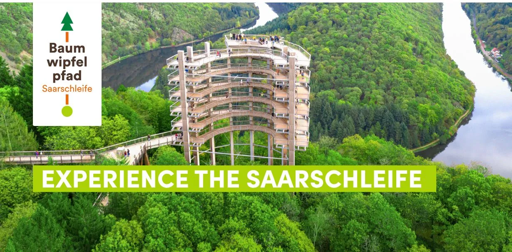
          </div>
          <div class="lodge-body">
            <div class="lodge-kicker">The Sensible Fallback</div>
            <h3><a href="https://traube-nennig.de/en/hotel-restaurant-zur-traube-en/">Hotel Zur Traube</a></h3>
            <p>21 rooms, on-site restaurant, EV charger, free parking — and roughly 11 minutes on foot from Victor's, both on the same Perl-Nennig postal address.<sup><a href="https://www.tripadvisor.com/Hotel_Review-g1185063-d3399983-Reviews-Hotel_Zur_Traube-Nennig_Saarland.html">[12]</a></sup></p>
            <div class="lodge-meta">
              <span>3.9★ · 49 reviews</span>
              <span><b>~11 min walk</b></span>
              <span>$179–244</span>
            </div>
          </div>
        </article>

        <!-- Card 3: Château Schengen -->
        <article class="lodge-card">
          <div class="lodge-photo">
            <div class="rank">3</div>
            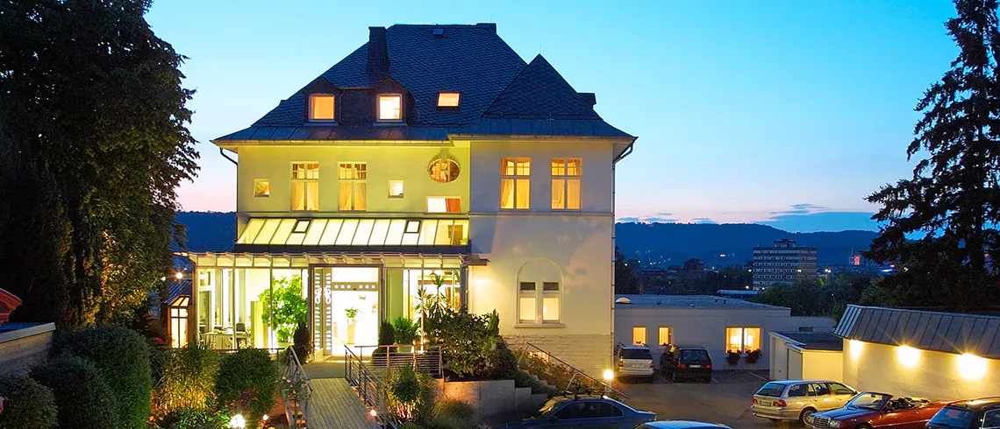
          </div>
          <div class="lodge-body">
            <div class="lodge-kicker">Cross the river</div>
            <h3><a href="https://www.chateauschengen.lu/">Hôtel Château Schengen</a></h3>
            <p>A 1390 castle, rebuilt as a manor in 1812 — Victor Hugo sketched the old tower in 1871<sup><a href="https://fr.wikipedia.org/wiki/Ch%C3%A2teau_de_Schengen">[15]</a></sup> — relaunched in June 2024 by the JBM group. 17 rooms with 13 more planned, a restaurant spanning four historic rooms.<sup><a href="https://communautefrancaisluxembourg.com/2025/04/28/restaurant-gastronomie-chateau-de-schengen/">[14]</a></sup> 2 km across the Moselle in Luxembourg, where <a href="https://luxembourg.public.lu/en/living/mobility/public-transport.html">all public transport is free</a>.<sup><a href="https://luxembourg.public.lu/en/living/mobility/public-transport.html">[44]</a></sup></p>
            <div class="lodge-meta">
              <span>Reopened 2024</span>
              <span><b>2 km · taxi</b></span>
              <span>17 rooms</span>
            </div>
          </div>
        </article>

        <!-- Card 4: Hotel Villa Hügel Trier -->
        <article class="lodge-card">
          <div class="lodge-photo">
            <div class="rank">4</div>
            
          </div>
          <div class="lodge-body">
            <div class="lodge-kicker">The Jugendstil pick</div>
            <h3><a href="https://hotel-villa-huegel.de/en/">Hotel Villa Hügel · Trier</a></h3>
            <p>1914 Jugendstil villa, 4-star superior, 45 rooms plus an adults-only Relax wing with rooftop pool.<sup><a href="https://hotel-villa-huegel.de/en/">[16]</a></sup> Trier is 44–48 km from Perl, just outside the strict 30 km radius<sup><a href="https://www.entfernungvon.com/de/entfernung-von-trier-nach-perl-deutschland/EntfernungHistorie/30291.aspx">[46]</a></sup> — pay for a €100+ taxi if you intend to stay this side.</p>
            <div class="lodge-meta">
              <span>4★ Superior</span>
              <span><b>44 km · taxi</b></span>
              <span>45 rooms</span>
            </div>
          </div>
        </article>

        <!-- Card 5: Domaine la Forêt -->
        <article class="lodge-card">
          <div class="lodge-photo">
            <div class="rank">5</div>
            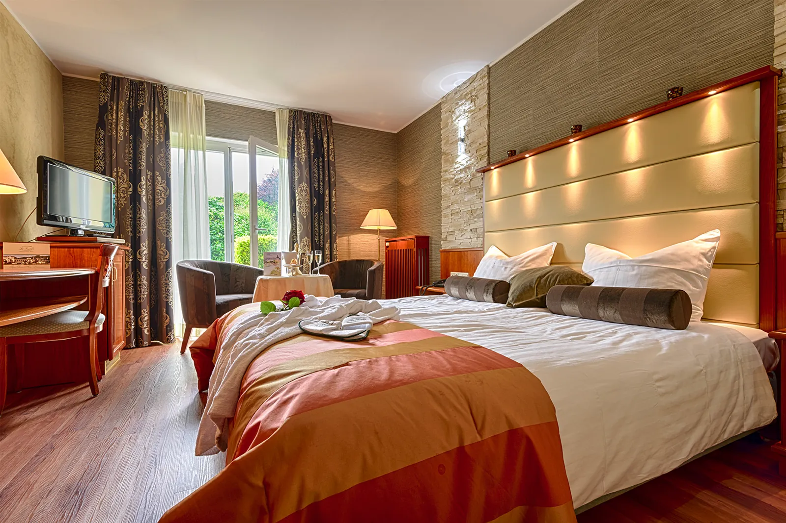
          </div>
          <div class="lodge-body">
            <div class="lodge-kicker">Spa & vineyard</div>
            <h3><a href="https://foret.lu/en/hotel/">Domaine la Forêt · Remich</a></h3>
            <p>Between vineyards and woodland in Luxembourg's Moselle valley — 16 rooms, a 700 m² spa, and a restaurant recommended by the MICHELIN Guide. Doubles from €150 to duplex suites with private terraces and Jacuzzis.<sup><a href="https://foret.lu/en/hotel/">[18]</a></sup></p>
            <div class="lodge-meta">
              <span>4★</span>
              <span><b>15 km · taxi</b></span>
              <span>16 rooms · spa</span>
            </div>
          </div>
        </article>

      </div>
    </div>
  </section>

  <!-- =================== RADIUS / ACTIVITIES =================== -->
  <section class="radius">
    <div class="wrap">
      <div class="radius-head">
        <div>
          <div class="section-rule left">The 30-km Radius</div>
          <h2>What to <em>do</em> with the daylight.</h2>
        </div>
        <p class="radius-intro">Every village surfaced by either lodging angle is also a day-trip — by design. Roman ruins, a treetop walk, a sparkling-wine cellar from 1919, a 36 °C spring across the border. Pace by the kitchen, not the kilometres.</p>
      </div>

      <div class="radius-grid">

        <article class="activity span-3 row-2">
          
          <div class="km">0.8 km · walk</div>
          <h4><a href="https://www.visitsaarland.co.uk/Media/Attractions/Roman-Villa-Nennig">Roman Villa Nennig</a></h4>
          <p>A 160 m² mosaic of 3M+ tesserae — gladiators, animal fights, musicians. One of very few Roman mosaics north of the Alps still at its original site, found in 1852. Walkable from Schloss Berg before dinner.<sup><a href="https://www.visitsaarland.co.uk/Media/Attractions/Roman-Villa-Nennig">[21]</a></sup></p>
        </article>

        <article class="activity span-3">
          
          <div class="km">~25 km · drive</div>
          <h4><a href="https://treetop-walks.com/saarschleife/en/">Treetop Walk Saarschleife</a></h4>
          <p>A 1,250 m canopy walkway up to a 42 m observation tower — low-barrier, max 6% gradient, no steps. Paired with the <a href="https://www.saarschleifenland.de/en/poi/detail/saar-bow-976ac5560e">Cloef viewpoint</a> 180 m above the river loop.<sup><a href="https://treetop-walks.com/saarschleife/en/">[25]</a></sup></p>
        </article>

        <article class="activity span-3">
          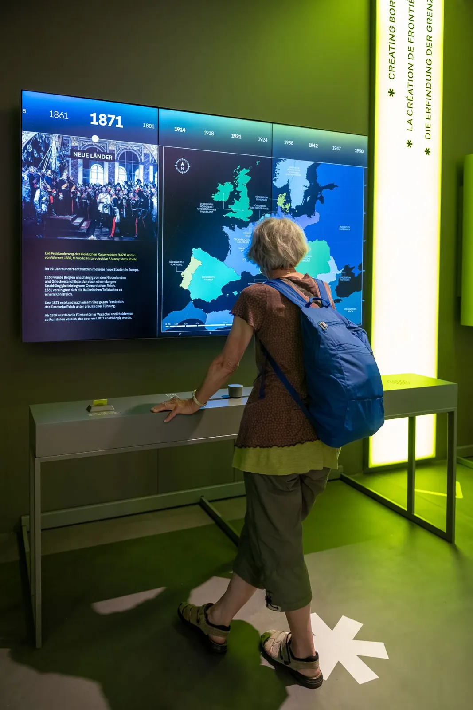
          <div class="km">3 km · cross river</div>
          <h4><a href="https://www.visitmoselle.lu/place/schengen-museum">European Museum Schengen</a></h4>
          <p>Reopened 2025 with a multilingual exhibition on the 1985 Agreement. The <a href="https://luxembourg.public.lu/en/society-and-culture/international-openness/schengen-40-ans-histoire-europe-bateau-.html">MS Princesse Marie-Astrid</a> — the signing ship itself — is moored a short walk away.<sup><a href="https://www.visitmoselle.lu/place/schengen-museum">[29]</a></sup><sup><a href="https://luxembourg.public.lu/en/society-and-culture/international-openness/schengen-40-ans-histoire-europe-bateau-.html">[30]</a></sup></p>
        </article>

        <article class="activity span-2">
          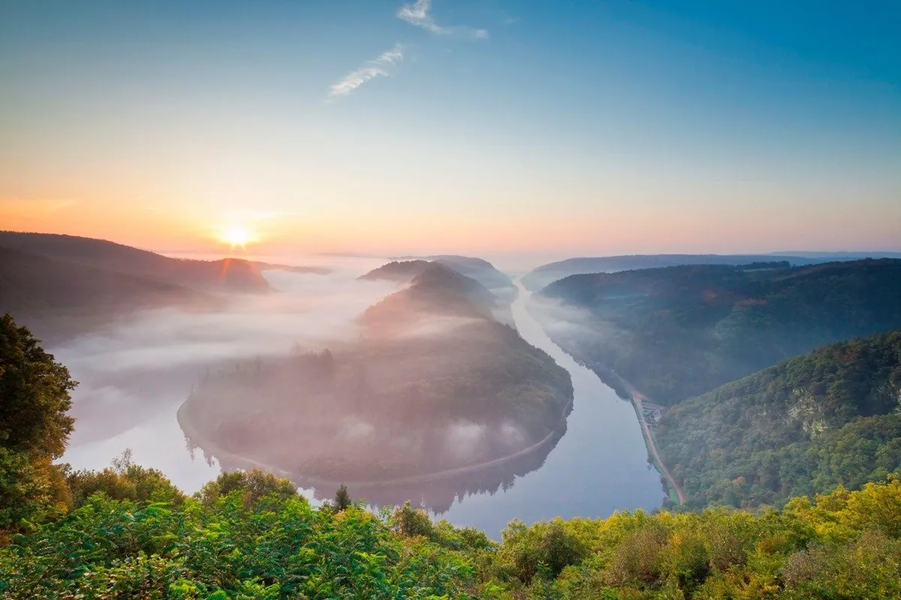
          <div class="km">~25 km</div>
          <h4><a href="https://www.saarschleifenland.de/en/poi/detail/saar-bow-976ac5560e">The Cloef</a></h4>
          <p>Rocky viewpoint 180 m above the Saar at the apex of the loop. Celtic for "steep cliff".<sup><a href="https://www.saarschleifenland.de/en/poi/detail/saar-bow-976ac5560e">[26]</a></sup></p>
        </article>

        <article class="activity span-2">
          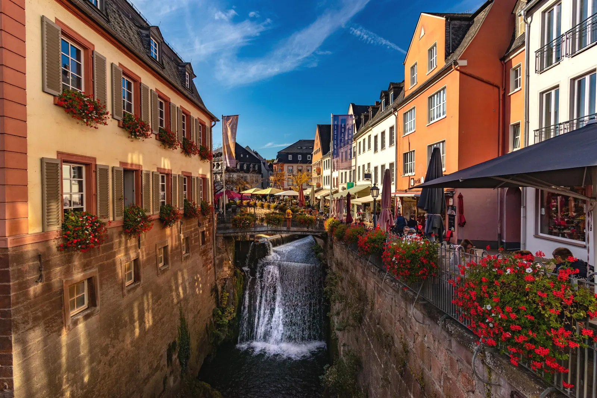
          <div class="km">19 km</div>
          <h4><a href="https://en.visitmosel.de/cities-culture/poi/waterfall">Saarburg Waterfall</a></h4>
          <p>20 m Leukbach falls cascading through the medieval old town — free to view from Buttermarkt platforms.<sup><a href="https://en.visitmosel.de/cities-culture/poi/waterfall">[37]</a></sup></p>
        </article>

        <article class="activity span-2">
          
          <div class="km">18 km · LU</div>
          <h4><a href="https://www.mondorf.lu/en">Mondorf Domaine Thermal</a></h4>
          <p>45 ha thermal park; baths fed by a 36 °C strongly mineralised spring. The Sunday-morning hangover cure.<sup><a href="https://www.mondorf.lu/en">[41]</a></sup></p>
        </article>

        <article class="activity span-2">
          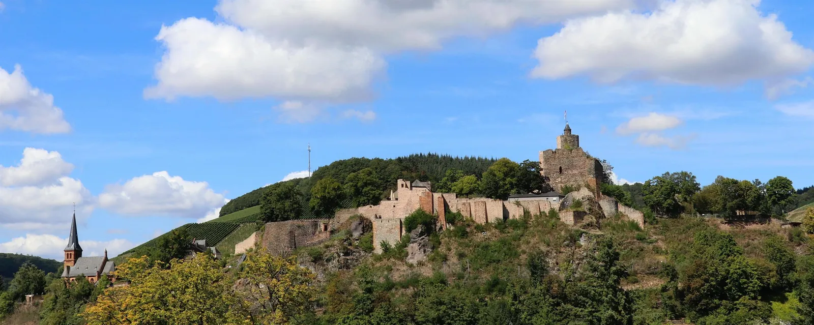
          <div class="km">19 km</div>
          <h4><a href="https://www.saar-obermosel.de/en/leisure-time/is/Burganlage-Saarburg_Saarburg">Burg Saarburg</a></h4>
          <p>Hilltop ruin first mentioned 964 AD — 100+ steps up the keep for the Saar-valley panorama. A restaurant in the bailey.<sup><a href="https://www.saar-obermosel.de/en/leisure-time/is/Burganlage-Saarburg_Saarburg">[38]</a></sup></p>
        </article>

        <article class="activity span-2">
          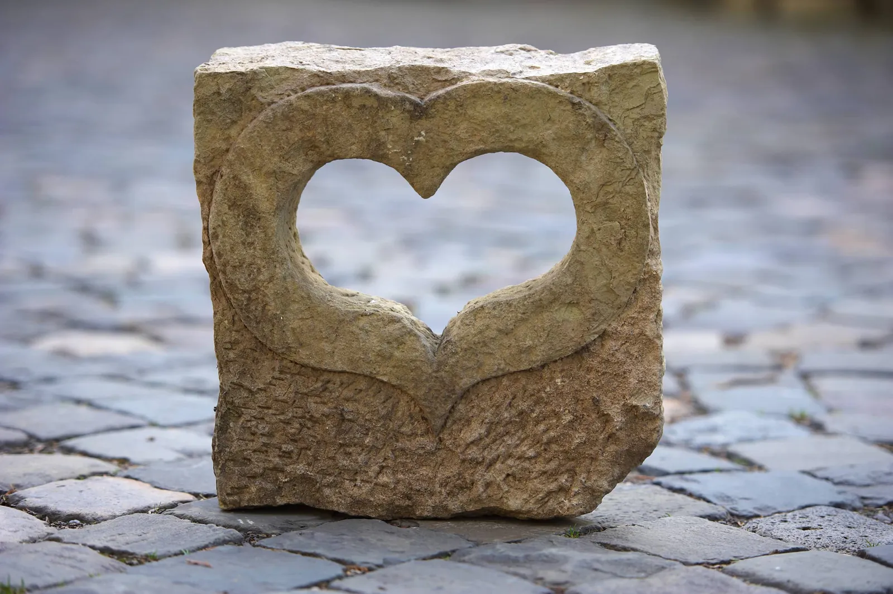
          <div class="km">~30 km</div>
          <h4><a href="https://vanvolxem.com/en/tastings/">Van Volxem</a> · Saar Riesling</h4>
          <p>Wed–Sun vinothek 11–17, eight-metre panoramic glass over the Scharzhofberg; commentated counter tastings without reservation.<sup><a href="https://vanvolxem.com/en/tastings/">[34]</a></sup></p>
        </article>

        <article class="activity span-2">
          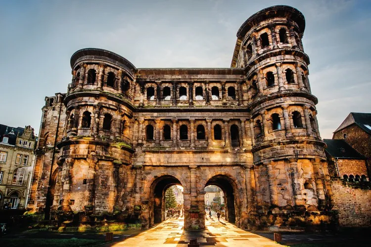
          <div class="km">44–48 km</div>
          <h4><a href="https://www.trier-info.de/en/places-of-interest/porta-nigra/">Porta Nigra · Trier</a></h4>
          <p>Best-preserved Roman city gate north of the Alps. Trier just exceeds the 30 km rule<sup><a href="https://www.entfernungvon.com/de/entfernung-von-trier-nach-perl-deutschland/EntfernungHistorie/30291.aspx">[46]</a></sup> — bend it for the Roman inventory.<sup><a href="https://www.trier-info.de/en/places-of-interest/porta-nigra/">[45]</a></sup></p>
        </article>

        <article class="activity span-3 dim">
          <div class="km">9.7 km</div>
          <h4><a href="https://www.germany.travel/en/cities-culture/borg-roman-villa-archaeology-park.html">Roman Villa Borg</a></h4>
          <p>The world's only fully reconstructed Roman villa rustica — manor, working baths, gardens, and a <a href="https://www.villa-borg.de/">Taverne serving Roman recipes</a> (lentil stew, roast ham with fig sauce, home-baked Roman bread) in a banquet hall built to look like a Roman dining room.<sup><a href="https://www.germany.travel/en/cities-culture/borg-roman-villa-archaeology-park.html">[23]</a></sup><sup><a href="https://www.villa-borg.de/">[24]</a></sup></p>
        </article>

        <article class="activity span-3 gradient-2">
          <div class="km">Remich · LU</div>
          <h4><a href="https://www.croisieurope.travel/en/trip/remich">Caves St-Martin</a> · 1919 sparkling cellars</h4>
          <p>Cellar tours through underground galleries explaining sparkling-wine production, founded 1919 in the aftermath of WWI. Add a Mosel boat trip from the promenade.<sup><a href="https://www.croisieurope.travel/en/trip/remich">[31]</a></sup> Across the river, <a href="https://www.vinsmoselle.lu/en/winetourism/welcome/visit-our-cellars">Domaines Vinsmoselle</a> runs four cellar sites — including the Art Deco Poll-Fabaire crémant cellar at Wormeldange.<sup><a href="https://www.vinsmoselle.lu/en/winetourism/welcome/visit-our-cellars">[32]</a></sup></p>
        </article>

      </div>
    </div>
  </section>

  <!-- =================== ITINERARY =================== -->
  <section class="plan">
    <div class="wrap">
      <div class="plan-grid">
        <div>
          <div class="section-rule left" style="color: var(--gold-2);"><span style="background:var(--gold-2); opacity:0.5;"></span>Plan the Day</div>
          <h2>A Saturday <em>by the kitchen</em>.</h2>
          <p class="standfirst">Paced so you arrive at the table light, hydrated and curious — not at 19:50 with a salt-pinched headache from a Trier basilica.</p>
        </div>
        <ol class="plan-steps">
          <li class="plan-step">
            <div class="plan-time">09:30<small>morning</small></div>
            <div class="plan-text">Coffee at Schloss Berg. Walk 800 m to the <b><a href="https://www.visitsaarland.co.uk/Media/Attractions/Roman-Villa-Nennig">Roman Villa Nennig</a></b> for the mosaic, plus the <a href="https://www.saarschleifenland.de/en/poi/detail/tumulus-perl-nennig-958bb6a0ba">Mahlknopf tumulus</a> if time.</div>
          </li>
          <li class="plan-step">
            <div class="plan-time">11:30<small>late morning</small></div>
            <div class="plan-text">Drive 25 km to the <b><a href="https://treetop-walks.com/saarschleife/en/">Treetop Walk Saarschleife</a></b>; out at <a href="https://www.saarschleifenland.de/en/poi/detail/saar-bow-976ac5560e">the Cloef</a> for the river loop view.</div>
          </li>
          <li class="plan-step">
            <div class="plan-time">14:00<small>lunch</small></div>
            <div class="plan-text">Lunch at the <b><a href="https://www.villa-borg.de/">Taverne in Villa Borg</a></b> — Roman recipes, banquet-hall dining, the only fully reconstructed Roman villa rustica.</div>
          </li>
          <li class="plan-step">
            <div class="plan-time">16:00<small>afternoon</small></div>
            <div class="plan-text">Cross the bridge to Schengen. <b><a href="https://www.visitmoselle.lu/place/schengen-museum">European Museum</a></b> + the <a href="https://luxembourg.public.lu/en/society-and-culture/international-openness/schengen-40-ans-histoire-europe-bateau-.html">MS Princesse Marie-Astrid</a>. <a href="https://luxembourg.public.lu/en/living/mobility/public-transport.html">Free LU public transport</a> on the way back.</div>
          </li>
          <li class="plan-step">
            <div class="plan-time">17:30<small>evening</small></div>
            <div class="plan-text">Back at Schloss Berg. Bath, change, slow the clock down.</div>
          </li>
          <li class="plan-step">
            <div class="plan-time">19:00<small>the table</small></div>
            <div class="plan-text"><b><a href="https://www.victors-fine-dining.de/en/restaurant">Victor's Fine Dining</a></b> — last orders 20:00. Walk back ten metres after. Sleep where the kitchen is.<sup><a href="https://www.victors-fine-dining.de/en/restaurant">[1]</a></sup></div>
          </li>
          <li class="plan-step">
            <div class="plan-time">Sun<small>recovery</small></div>
            <div class="plan-text"><b><a href="https://www.mondorf.lu/en">Mondorf Domaine Thermal</a></b> across the border — 36 °C spring, 45 ha park. Spa open Sun 09–18.<sup><a href="https://www.mondorf.lu/en/timetable">[42]</a></sup></div>
          </li>
        </ol>
      </div>
    </div>
  </section>

  <!-- =================== DEPARTURE / OPEN QUESTION =================== -->
  <section class="departure">
    <div class="wrap">
      <div class="depart-grid">
        <div>
          <div class="section-rule left">Departure</div>
          <h2>The sharpest <em>open question</em>.</h2>
          <p>With the <a href="https://www.victors-fine-dining.de/en/restaurant">creative-pause closures of 18 May–7 June and 21 September–4 October 2026</a><sup><a href="https://www.victors-fine-dining.de/en/restaurant">[1]</a></sup> and Saturday lunch <em>also</em> available, is the right play one night with dinner, or two nights with Saturday lunch and Saturday dinner stacked — and does the kitchen take a back-to-back same-day booking?</p>
          <p>That is a question for the phone call. Pose it before you commit either lodging.</p>
        </div>
        <aside class="gap-box">
          <h4>What this feature does not cover</h4>
          <p>The <strong>IT conferences and tech events</strong> angle — a sister survey planned for this run — did not complete (the child run.sh exited 1). If you hoped to attach the weekend to a Saarland or Luxembourg tech conference, that bridge must be drawn manually.</p>
          <p>Better candidates noted in the canonical: the <a href="https://www.saarweinfest.de/">Saarweinfest in Saarburg</a> (5–7 September 2026)<sup><a href="https://www.saarweinfest.de/">[48]</a></sup> and <a href="https://www.saar-riesling-sommer.de/">SaarRieslingSommer</a> (29–30 August 2026).<sup><a href="https://www.saar-riesling-sommer.de/">[49]</a></sup></p>
          <div class="label-row">
            <span>Missing · 1 angle</span>
            <span>Wine fixtures · 2 dates</span>
          </div>
        </aside>
      </div>
    </div>
  </section>

  <!-- =================== COLOPHON =================== -->
  <section class="colophon">
    <div class="wrap">
      <div class="col-grid">

        <div class="col-block">
          <h4>The Booking Sources</h4>
          <ol>
            <li><span class="n">1</span><span><a href="https://www.victors-fine-dining.de/en/restaurant">Victor's Fine Dining — hours, creative pauses, three stars since 2005</a></span></li>
            <li><span class="n">2</span><span><a href="https://www.victors-fine-dining.de/en/contact">Schloßstraße 27–29, 66706 Perl-Nennig · +49 6866 79-118</a></span></li>
            <li><span class="n">3</span><span><a href="https://www.victors-fine-dining.de/en/faq">FAQ — restaurant will book your hotel room</a></span></li>
            <li><span class="n">4</span><span><a href="https://guide.michelin.com/us/en/saarland/perl/restaurant/victor-s-fine-dining-by-christian-bau">MICHELIN Guide listing</a></span></li>
            <li><span class="n">5</span><span><a href="https://www.victors.de/en/hotels/victor-s-residenz-hotel-schloss-berg/rooms1">Schloss Berg — 106 rooms across villa + castle</a></span></li>
            <li><span class="n">6</span><span><a href="https://www.victors.de/en/hotels/victor-s-residenz-hotel-schloss-berg/restaurants-bars">Castle building / villa rooms layout</a></span></li>
            <li><span class="n">7</span><span><a href="https://www.victors.de/en/hotels/victor-s-residenz-hotel-schloss-berg/bacchus">Bacchus — on-property Italian/Mediterranean</a></span></li>
            <li><span class="n">8</span><span><a href="https://guide.michelin.com/en/hotels-stays/nennig/victors-residenz-hotel-schloss-berg-9737">MICHELIN Guide hotels — Schloss Berg</a></span></li>
            <li><span class="n">9</span><span><a href="https://www.tripadvisor.com/Hotel_Review-g1185063-d1751985-Reviews-Victor_s_Residenz_Hotel_Schloss_Berg-Nennig_Saarland.html">Tripadvisor review summary — patchy gloss</a></span></li>
          </ol>
        </div>

        <div class="col-block">
          <h4>Lodging & Cross-Border</h4>
          <ol>
            <li><span class="n">11</span><span><a href="https://traube-nennig.de/en/hotel-restaurant-zur-traube-en/">Hotel Zur Traube — Bübinger Straße 22</a></span></li>
            <li><span class="n">12</span><span><a href="https://www.tripadvisor.com/Hotel_Review-g1185063-d3399983-Reviews-Hotel_Zur_Traube-Nennig_Saarland.html">Zur Traube · 3.9★ · 49 reviews · ~11 min walk</a></span></li>
            <li><span class="n">13</span><span><a href="https://www.chateauschengen.lu/">Hôtel Château Schengen · relaunched 2024</a></span></li>
            <li><span class="n">14</span><span><a href="https://communautefrancaisluxembourg.com/2025/04/28/restaurant-gastronomie-chateau-de-schengen/">Château Schengen — JBM relaunch profile</a></span></li>
            <li><span class="n">15</span><span><a href="https://fr.wikipedia.org/wiki/Ch%C3%A2teau_de_Schengen">Château de Schengen — 1390 castle history</a></span></li>
            <li><span class="n">16</span><span><a href="https://hotel-villa-huegel.de/en/">Hotel Villa Hügel Trier · 1914 Jugendstil</a></span></li>
            <li><span class="n">18</span><span><a href="https://foret.lu/en/hotel/">Domaine la Forêt · Remich · 700 m² spa</a></span></li>
            <li><span class="n">44</span><span><a href="https://luxembourg.public.lu/en/living/mobility/public-transport.html">Luxembourg public transport — free since 2020</a></span></li>
            <li><span class="n">46</span><span><a href="https://www.entfernungvon.com/de/entfernung-von-trier-nach-perl-deutschland/EntfernungHistorie/30291.aspx">Trier ↔ Perl: 44–48 km road distance</a></span></li>
          </ol>
        </div>

        <div class="col-block">
          <h4>The Radius — Sights & Spa</h4>
          <ol>
            <li><span class="n">21</span><span><a href="https://www.visitsaarland.co.uk/Media/Attractions/Roman-Villa-Nennig">Roman Villa Nennig · 160 m² mosaic</a></span></li>
            <li><span class="n">23</span><span><a href="https://www.germany.travel/en/cities-culture/borg-roman-villa-archaeology-park.html">Roman Villa Borg · only fully reconstructed villa rustica</a></span></li>
            <li><span class="n">25</span><span><a href="https://treetop-walks.com/saarschleife/en/">Treetop Walk Saarschleife · 1,250 m + 42 m tower</a></span></li>
            <li><span class="n">26</span><span><a href="https://www.saarschleifenland.de/en/poi/detail/saar-bow-976ac5560e">The Cloef · 180 m above the Saar loop</a></span></li>
            <li><span class="n">29</span><span><a href="https://www.visitmoselle.lu/place/schengen-museum">European Museum Schengen · reopened 2025</a></span></li>
            <li><span class="n">30</span><span><a href="https://luxembourg.public.lu/en/society-and-culture/international-openness/schengen-40-ans-histoire-europe-bateau-.html">MS Princesse Marie-Astrid · 1985 signing ship</a></span></li>
            <li><span class="n">31</span><span><a href="https://www.croisieurope.travel/en/trip/remich">Caves St-Martin Remich · cellar tours since 1919</a></span></li>
            <li><span class="n">34</span><span><a href="https://vanvolxem.com/en/tastings/">Weingut Van Volxem · Scharzhofberg vinothek</a></span></li>
            <li><span class="n">37</span><span><a href="https://en.visitmosel.de/cities-culture/poi/waterfall">Saarburg waterfall · 20 m through the old town</a></span></li>
            <li><span class="n">38</span><span><a href="https://www.saar-obermosel.de/en/leisure-time/is/Burganlage-Saarburg_Saarburg">Burg Saarburg · hilltop ruin since 964 AD</a></span></li>
            <li><span class="n">41</span><span><a href="https://www.mondorf.lu/en">Mondorf Domaine Thermal · 36 °C spring spa</a></span></li>
            <li><span class="n">45</span><span><a href="https://www.trier-info.de/en/places-of-interest/porta-nigra/">Porta Nigra Trier · best-preserved Roman gate</a></span></li>
          </ol>
        </div>

      </div>

      <div class="wrap" style="padding: 0;">
        <h4 style="font-family: var(--sans); font-size: 10px; letter-spacing: 0.36em; text-transform: uppercase; color: var(--oxblood); font-weight: 700; margin: 40px 0 16px; padding-bottom: 10px; border-bottom: 1px solid rgba(44,30,22,0.18);">Further Reading — sibling expeditions</h4>
        <div style="display: grid; grid-template-columns: repeat(3, 1fr); gap: 18px;">
          <a href="../day-trips-and-activities-within-30-km-of-victor-s-fine-dining-by-christian-bau/" style="border:0;">
            <article class="sibling-card">
              <span class="depth-pill">Expedition · 78 citations</span>
              <h5>Day-trips & activities within 30 km of Victor's Fine Dining</h5>
              <p>Roman mosaics, Saarschleife, Mosel wine, Schengen, the Trier add-on.</p>
            </article>
          </a>
          <a href="../walking-distance-lodging-at-or-near-victor-s-fine-dining-by-christian-bau/" style="border:0;">
            <article class="sibling-card">
              <span class="depth-pill survey">Survey · 18 citations</span>
              <h5>Walking-distance lodging at or near Victor's Fine Dining</h5>
              <p>Four lodging options inside Nennig village; only one is on-property.</p>
            </article>
          </a>
          <a href="../special-character-lodging-within-taxi-range-of-victor-s-fine-dining-by-christian-bau/" style="border:0;">
            <article class="sibling-card">
              <span class="depth-pill survey">Survey · 21 citations</span>
              <h5>Special-character lodging within taxi range</h5>
              <p>Castles, tree houses, a Jugendstil villa, a cross-border boutique spa.</p>
            </article>
          </a>
        </div>
      </div>

      <div class="wrap" style="padding: 0;">
        <div class="plate">
          <div><b>Atlas · Travel</b> · A weekend feature</div>
          <div>Filed 2026-05-27 · 117 citations · ★ ★ ★</div>
          <div>Schloßstraße 27–29 · 66706 Perl-Nennig</div>
        </div>
      </div>
    </div>
  </section>

</article>
